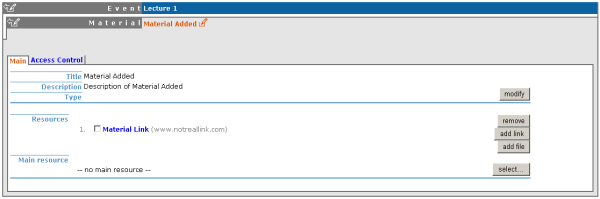
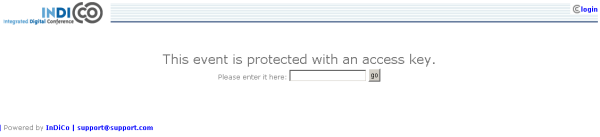
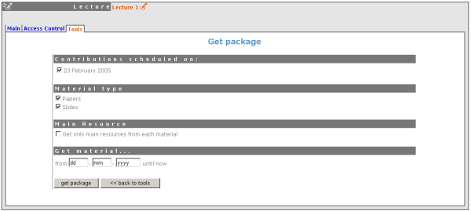
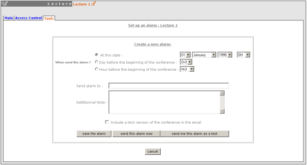

| Prev | Chapter 4. Lectures | Next |
The Management Area allows you to control the different parts of your lecture the following sections will show each area of the Lecture Management.
From the Main tab, you are able to modify the details of the lecture including title, description, location, dates, chairpersons text and default style of the display.

From here you can also add any chairpersons, add or modify material (see Material) or close the lecture - closing the lecture will mean that it can no longer be accessed.
The frames surrounding each management area, give you access to either the modification area above or to a display of that area.

Clicking on the left hand icon  will take you to the management display area for the area you are on, e.g.material(See Material Diplay).
will take you to the management display area for the area you are on, e.g.material(See Material Diplay).
You can add material to the lecture, by using the 'add' option in the material section, you can then enter the name and description of the material.

Once added you have the options to add links or files to your material, one of these files/links can be classed as the main resource. You also have an access control tab within the material for you to control who has access to view the material.
Access Control in a lecture is the same as that in a Meeting. There is Modification control, Domain Control and Access Control. When adding to the Access and Modification lists, you can also add Groups of users if any have been defined by Administration.
Modification Control Only the managers listed in the modification control, the creator of the lecture and any administrators can access the Management Area of the lecture. However you can add a Modification Key which means anyone with this key can modify the lecture without logging in.

Access Control When the lecture is public - Anyone can view the lecture . When the lecture is private - Only those in the access list, lecture managers and administrators can view the lecture.

When private you can also add an Access Key which means anyone with this key can access the lecture without logging in.
Domain Control This is not available when the lecture is private, but when it is available it allows you to specify which IP addresses can access the lecture.
The lecture Tools allow you to make certain actions on the whole of the lecture.

The delete lecture option will delete the whole lecture. You will be asked to confirm deletion first.

Clone the lecture if you would like to make another lecture the same, you have the option to clone it just once, at fixed intervals or on certain dates.

Using the 'Get material package' option you can create a package of all the materials that have been used in the lecture.

Using the 'Offline web for your lecture' option you can create a copy of your lecture that can be used offline for example if you wish to store your lecture to a dvd.

You can set an an alarm / reminder to alert people about the lecture, the alert will be in the form of an email.

This Lecture Management Area explained can only be accessed by Administrators or Lecture Managers.